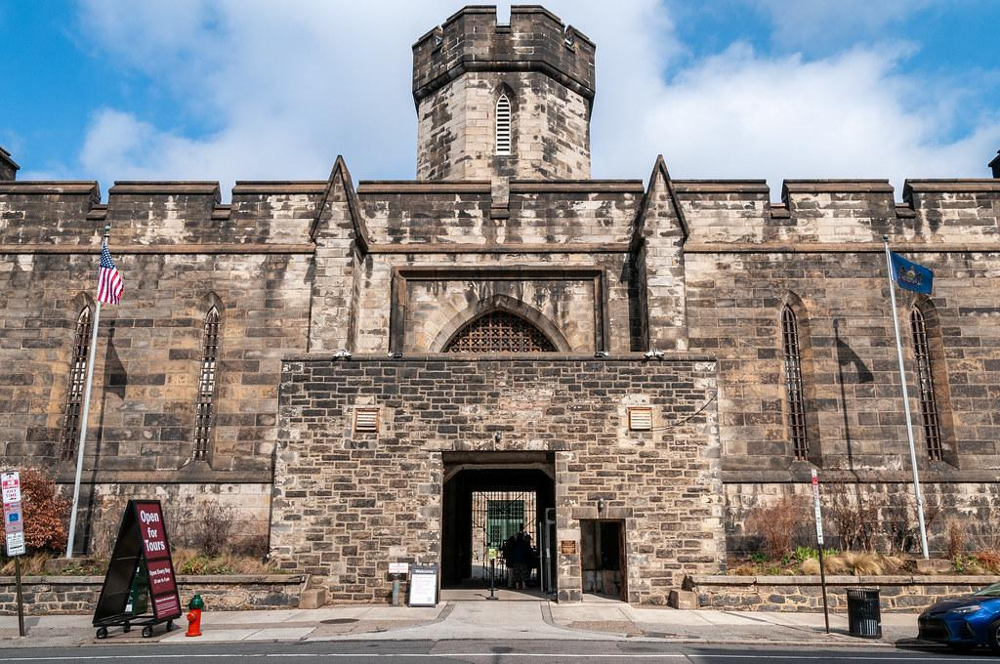

The History of Eastern State Penitentiary
Rising above the streets of Philadelphia, Pennsylvania, Eastern State Penitentiary is one of America's most recognizable historic prisons. Opened in 1829, it introduced an ambitious approach to incarceration based on isolation, reflection, and personal reform. Its imposing stone walls and fortress-like appearance concealed a revolutionary architectural design that influenced prisons around the world. Over the following century, the institution evolved into a conventional prison before closing in the early 1970s. Today, its preserved ruins offer visitors a fascinating look at the history of punishment, rehabilitation, and prison reform.

Origins and Architecture
Designed by British-born architect John Haviland, Eastern State Penitentiary featured an innovative radial floor plan. Seven original cellblocks extended outward from a central surveillance hub, allowing guards to observe corridors efficiently. The building's dramatic Gothic Revival exterior was intended to inspire fear and respect, while its vaulted cells incorporated skylights, heating, and plumbing. Each prisoner originally occupied a private cell connected to an individual exercise yard. This distinctive arrangement became known as the Pennsylvania System and influenced correctional architecture internationally.
People and Changing History
Eastern State Penitentiary housed thousands of prisoners from different backgrounds, including several well-known criminals. Among its most famous inmates was Al Capone, who spent much of a 1929–1930 sentence inside the institution. Bank robber Willie Sutton was also imprisoned there. Over time, the prison abandoned its original philosophy of strict separation as overcrowding and changing correctional practices made the system increasingly impractical. Additional cellblocks were constructed, and the institution gradually became a more conventional prison. Its changing operations reflected broader debates about whether incarceration should prioritize punishment, isolation, or rehabilitation.
Notable Events
Eastern State admitted its first prisoner in 1829, beginning more than a century of operation. In 1842, author Charles Dickens visited the institution and strongly criticized its solitary-confinement practices. The original Pennsylvania System was formally abandoned in 1913. In 1929, Al Capone became one of its most famous inmates, while a dramatic tunnel escape attempt involving Willie Sutton occurred in 1945. Pennsylvania ended its prison operations in 1970, and the building briefly served as a city jail until 1971. After years of abandonment, preservation efforts led to public tours beginning in 1994.
Legends and Mysteries
With its deteriorating cellblocks, shadowy corridors, and long history of confinement, Eastern State Penitentiary has inspired numerous ghost stories. Visitors have reported unexplained footsteps, distant voices, unusual shadows, and disturbing sensations within the abandoned prison. One particularly well-known account involves a locksmith who described a frightening experience while working on an old cell door. These stories contributed to the site's reputation as a haunted destination and inspired seasonal Halloween attractions. However, the penitentiary does not claim that supernatural activity has been scientifically verified, and its haunted reputation remains part of its modern folklore.
Evidence and Unanswered Questions
Historical records document Eastern State's development, inmate population, architectural changes, and evolving correctional policies. Prison registers, institutional reports, and surviving architectural features provide evidence of its daily operations and changing conditions. The building offers a particularly important example of how an ambitious reform movement produced consequences that were later widely criticized. Although individual experiences and paranormal stories continue to generate public curiosity, historical evidence does not establish supernatural activity. The prison's most significant unanswered questions concern the human consequences of isolation and the lasting influence of its experimental design.
Sources and References
The historical information presented on this page was compiled from Eastern State Penitentiary Historic Site, the Pennsylvania State Archives, and the Encyclopedia of Greater Philadelphia. These resources document the building's architecture, original purpose, prisoners, notable events, and preservation. Reported paranormal experiences are presented as folklore rather than verified historical events.
References
Eastern State Penitentiary — Official History https://easternstate.org/about/history-of-eastern-state-penitentiary
Encyclopedia of Greater Philadelphia — Eastern State Penitentiary https://philadelphiaencyclopedia.org/essays/eastern-state-penitentiary/
National Public Radio — Is Eastern State Penitentiary Really Haunted? https://www.nhpr.org/national/2013-10-24/is-eastern-state-penitentiary-really-haunted
Pennsylvania State Archives — Prison Records https://www.pa.gov/agencies/phmc/pa-state-archives/research-online/research-guides/prison-records.html